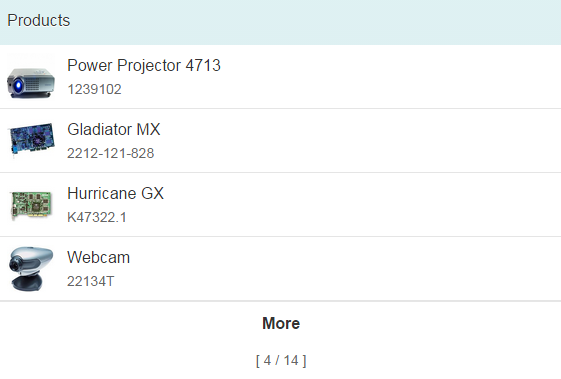

Growing Feature for Table and List
sap.m.ListBase provides growing-related properties, which can be used for tables and lists.
A growing list has a loading mechanism that requests data from the model in a lazy way. This enables the app to only fetch data from the server as and when necessary.
The growing-related properties of sap.m.ListBase are:
- growing: Boolean to set the growing feature to on or off
- growingScrollToLoad: If you want to allow more data to be fetched when the user scrolls down to the end of the current items, set this boolean property to true; otherwise a trigger button must be used
- growingThreshold: The number of items that are requested each time from the model
- growingTriggerText: The text on a trigger button used to cause a request for more data
To enable data for a table to be fetched on demand like this, you just need to set the values for these properties appropriately on your table control. For example, adding the highlighted lines as shown in the following code will cause five items to be displayed in the table initially along with a More button (this is the default text used if you don't set a different text using the growingTriggerText property), as shown below the code:
<List
items="{/ProductCollection}"
headerText="Products"
growing="true"
growingThreshold="4"
growingScrollToLoad="false">
<StandardListItem
title="{Name}"
description="{ProductId}"
icon="{ProductPicUrl}"
iconDensityAware="false"
iconInset="false" />
</List>

If you want the user to have to scroll down to see more items (by setting the growingScrollToLoad property to true), you must ensure that the control is within a container that has a scroll feature, such as an sap.m.Page in an sap.m.App control, like this:
<App>
<Page title="Table Events">
<Table>
...
</Table>
</Page>
<App>